Investing in a Safer Louisville
library(glptools)
library(glpdata)
library(gt)
glp_load_packages(graphs = T)
showtext_auto()
font_add("Museo Sans", "MuseoSans_300.otf")
font_add("Museo Sans 300 Italic", "MuseoSans_300_Italic.otf")
knitr::opts_chunk$set(echo = TRUE, warning = FALSE, message = FALSE,
dev.args=list(bg="transparent"), fig.width=15, fig.height=12)Introduction
Through the American Rescue Plan, Louisville is making historic investments in violence prevention—at the same time that we are seeing historic levels of violence in our city. GLP is partnering with Cities United to create data on violence in our city and the investments we are making to create a safer Louisville.
Our goal is to make a positive contribution to support the work of people who have been working on the ground for years to address this issue. It is our deepest intention to contribute wisely to this topic, and our work reflects the outcome of months of conversations with community members.
Based on the legislation in front of Metro Council, Public Safety will likely receive nearly $67 million in investment through ARP funds over the next four years.

Protective factors and risk factors
Protective factors are supports that provide positive influence on youth and encourage them to thrive, while risk factors make youth more inclined commit violence. Examples of protective factors include positive self-esteem and an experienced teacher at school, and examples of risk factors include substance abuse in the household and violence in their neighborhood.
See here for further information: https://www.samhsa.gov/sites/default/files/20190718-samhsa-risk-protective-factors.pdf
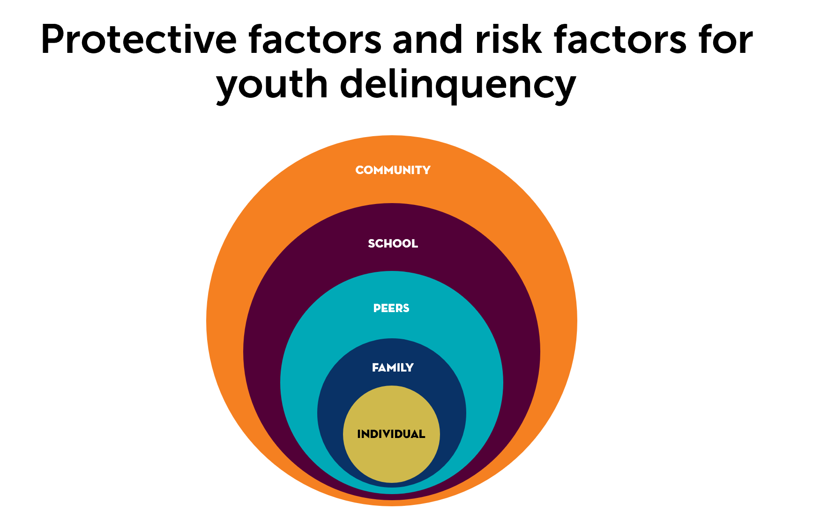
Violence in Louisville
clean_wonder <- function(df, method = "sum"){
#new names for variables
names_recode <- c(
`County Code` = "FIPS",
`Residence County Code` = "FIPS",
`Year Code` = "year",
`Month Code` = "month",
`Single-Year Ages Code` = "age",
`Five-Year Age Groups Code` = "age_5_codes",
`Ten-Year Age Groups Code` = "age_10_codes",
Deaths = "deaths",
Population = "population",
`Birth Weight 12 Code` = "weight",
Births = "births",
Race = "race",
`Bridged Race` = "race",
`Mother's Bridged Race` = "race",
Gender = "sex",
`Age Adjusted Rate` = "rate",
`UCD - ICD-10 113 Cause List` = "cod",
`Multiple Cause of death Code` = "cod")
#list of variables to keep (same as above list)
keep_names <- c("FIPS", "year", "month", "age", "age_5_codes", "age_10_codes",
"deaths", "population", "weight", "births",
"race", "sex", "rate", "cod")
#list of variables to change to numeric
numeric_names <- c("year", "month", "age", "deaths", "population",
"weight", "births", "rate")
df <- df %>%
plyr::rename(
replace = names_recode,
warn_missing = FALSE)
if("age_10_codes" %in% names(df)){
age_10_df <- data.frame(
age_10_codes = c("1", "1-4", "5-14", "15-24", "25-34", "35-44",
"45-54", "55-64", "65-74", "75-84", "85+", "NS"),
age_10 = c(0:10, NA))
df %<>%
left_join(age_10_df, by = "age_10_codes") %>%
select(-age_10_codes)
}
if("month" %in% names(df)){
df %<>%
mutate(month = str_sub(month, 6, 7))
}
#filter rows containing totals (which do not contain specific years)
df <- df %>%
filter_at(df %cols_in% c("FIPS", "year", "age", "age_5", "age_10", "race", "sex"),
all_vars(!is.na(.)))
#convert variables to numeric and subset data frame to variables of interest
df <- df %>%
mutate_at(df %cols_in% numeric_names, as.numeric) %>%
select_at(df %cols_in% keep_names)
if("race" %in% names(df)){
df %<>%
mutate(
race = replace(race, race == "Black or African American", "black"),
race = replace(race, race == "White", "white"))
}
if("sex" %in% names(df)){
df %<>% mutate(sex = str_to_lower(sex))
}
df %<>%
pivot_longer(
df %cols_in% c("births", "deaths", "rate", "population"),
names_to = "var_type",
values_to = df %cols_in% c("births", "deaths", "rate")) %>%
mutate(var_type = case_when(
var_type %in% c("births", "deaths") ~ "estimate",
var_type %in% c("rate") ~ "rate",
var_type %in% c("population") ~ "population"))
if ("race" %not_in% names(df)) df$race <- "total"
if ("sex" %not_in% names(df)) df$sex <- "total"
df %<>% organize()
df
}deaths_total_99 <- wonder_time("intermediate_data/wonder/demographic_files/deaths_gender_total_99")
deaths_white_99 <- wonder_time("intermediate_data/wonder/demographic_files/deaths_gender_white_99")
deaths_black_99 <- wonder_time("intermediate_data/wonder/demographic_files/deaths_gender_black_99")
deaths_hispanic_99 <- wonder_time("intermediate_data/wonder/demographic_files/deaths_gender_hispanic_99")
deaths_total_99 %<>%
clean_wonder()
deaths_white_99 %<>%
clean_wonder() %>%
mutate(race = "white")
deaths_black_99 %<>%
clean_wonder() %>%
mutate(race = "black")
deaths_hispanic_99 %<>%
clean_wonder() %>%
mutate(race = "hispanic")
deaths_total_18 <- wonder_time("intermediate_data/wonder/demographic_files/deaths_gender_total_18")
deaths_blackwhite_18 <- wonder_time("intermediate_data/wonder/demographic_files/deaths_gender_blackwhite_18")
deaths_hispanic_18 <- wonder_time("intermediate_data/wonder/demographic_files/deaths_gender_hispanic_18")
deaths_total_18 %<>%
clean_wonder() %>%
mutate(race = "total") %>%
filter(year == 2021)
deaths_blackwhite_18 %<>%
rename(Race = `Single Race 6`) %>%
clean_wonder() %>%
filter(year == 2021)
deaths_hispanic_18 %<>%
clean_wonder() %>%
mutate(race = "hispanic") %>%
filter(year == 2021)
mortality_age <- bind_rows(deaths_total_99, deaths_white_99) %>%
bind_rows(deaths_black_99) %>%
bind_rows(deaths_hispanic_99) %>%
bind_rows(deaths_total_18) %>%
bind_rows(deaths_blackwhite_18) %>%
bind_rows(deaths_hispanic_18)
mortality_age %<>%
filter(year >= 2000) %>%
mutate(cod = case_when(
cod == "#Assault (homicide) (*U01-*U02,X85-Y09,Y87.1)" ~ "homicide",
cod == "Assault (homicide) by discharge of firearms (*U01.4,X93-X95)" ~ "homicide_gun",
cod == "Assault (homicide) by other and unspecified means and their sequelae (*U01.0-*U01.3,*U01.5-*U01.9,*U02,X85-X92,X96-Y09,Y87.1)" ~ "homicide_other",
cod == "#Intentional self-harm (suicide) (*U03,X60-X84,Y87.0)" ~ "suicide",
cod == "Intentional self-harm (suicide) by discharge of firearms (X72-X74)" ~ "suicide_gun",
cod == "Intentional self-harm (suicide) by other and unspecified means and their sequelae (*U03,X60-X71,X75-X84,Y87.0)" ~ "suicide_other"))
mortality_age %<>%
pivot_wider(names_from = "cod", values_from = "deaths")
mortality_age %<>%
mutate(
suicide_gun = if_else(is.na(suicide_gun), suicide - suicide_other, suicide_gun),
suicide_other = if_else(is.na(suicide_other), suicide - suicide_gun, suicide_other),
homicide_gun = if_else(is.na(homicide_gun), homicide - homicide_other, homicide_gun),
homicide_other = if_else(is.na(homicide_other), homicide - homicide_gun, homicide_other))
mortality_age_totals <- mortality_age %>%
filter(FIPS == "total") %>%
rename(
suicide_total = suicide,
suicide_gun_total = suicide_gun,
suicide_other_total = suicide_other,
homicide_total = homicide,
homicide_gun_total = homicide_gun,
homicide_other_total = homicide_other) %>%
select(-FIPS)
mortality_age %<>%
left_join(mortality_age_totals, by = c("year", "sex", "race", "var_type", "age_5_codes"))
mortality_age %<>%
transmute(
FIPS, year, sex, race, var_type,
age_5 = age_5_codes,
homicide = homicide - homicide_total,
homicide_gun = homicide_gun - homicide_gun_total,
homicide_other = homicide_other - homicide_other_total,
suicide = suicide - suicide_total,
suicide_gun = suicide_gun - suicide_gun_total,
suicide_other = suicide_other - suicide_other_total)
mortality_age_population <- mortality_age %>%
filter(var_type == "population") %>%
select(-var_type) %>%
select(FIPS, year, sex, race, age_5, population = homicide)
mortality_age_estimates <- mortality_age %>%
filter(var_type == "estimate") %>%
select(-var_type)
mortality_age <- left_join(mortality_age_estimates, mortality_age_population, by = c("FIPS", "year", "sex", "race", "age_5"))
rm(mortality_age_totals,
deaths_total_99, deaths_white_99, deaths_black_99, deaths_hispanic_99,
deaths_total_18, deaths_blackwhite_18, deaths_hispanic_18,
mortality_age_population, mortality_age_estimates)# Totals
cancer_18 <- read_tsv("intermediate_data/wonder/totals/cancer.txt")
# Suicide
cancer_suicide_18 <- read_tsv("intermediate_data/wonder/totals/cancer_suicide.txt")
cancer_suicide_gun_18 <- read_tsv("intermediate_data/wonder/totals/cancer_suicide_gun.txt")
cancer_suicide_other_18 <- read_tsv("intermediate_data/wonder/totals/cancer_suicide_other.txt")
# Homicide
cancer_homicide_18 <- read_tsv("intermediate_data/wonder/totals/cancer_homicide.txt")
cancer_homicide_gun_18 <- read_tsv("intermediate_data/wonder/totals/cancer_homicide_gun.txt")
cancer_homicide_other_18 <- read_tsv("intermediate_data/wonder/totals/cancer_homicide_other.txt")
# Totals
cancer_99 <- read_tsv("intermediate_data/wonder/totals/cancer_99.txt")
# Suicide
cancer_suicide_99 <- read_tsv("intermediate_data/wonder/totals/cancer_suicide_99.txt")
cancer_suicide_gun_99 <- read_tsv("intermediate_data/wonder/totals/cancer_suicide_gun_99.txt")
cancer_suicide_other_99 <- read_tsv("intermediate_data/wonder/totals/cancer_suicide_other_99.txt")
# Homicide
cancer_homicide_99 <- read_tsv("intermediate_data/wonder/totals/cancer_homicide_99.txt")
cancer_homicide_gun_99 <- read_tsv("intermediate_data/wonder/totals/cancer_homicide_gun_99.txt")
cancer_homicide_other_99 <- read_tsv("intermediate_data/wonder/totals/cancer_homicide_other_99.txt")
# Clean suicide data
cancer_99 %<>% clean_wonder %>% filter(year >= 2000)
cancer_18 %<>% clean_wonder %>% filter(year >= 2021)
cancer <- bind_rows(cancer_99, cancer_18) %>%
rename(cancer = deaths)
cancer_suicide_99 %<>% clean_wonder %>% filter(year >= 2000)
cancer_suicide_18 %<>% clean_wonder %>% filter(year >= 2021)
cancer_suicide <- bind_rows(cancer_suicide_99, cancer_suicide_18) %>%
rename(cancer_suicide = deaths)
cancer_suicide_gun_99 %<>% clean_wonder %>% filter(year >= 2000)
cancer_suicide_gun_18 %<>% clean_wonder %>% filter(year >= 2021)
cancer_suicide_gun <- bind_rows(cancer_suicide_gun_99, cancer_suicide_gun_18) %>%
rename(cancer_suicide_gun = deaths)
cancer_suicide_other_99 %<>% clean_wonder %>% filter(year >= 2000)
cancer_suicide_other_18 %<>% clean_wonder %>% filter(year >= 2021)
cancer_suicide_other <- bind_rows(cancer_suicide_other_99, cancer_suicide_other_18) %>%
rename(cancer_suicide_other = deaths)
# Clean homicide data
cancer_homicide_99 %<>% clean_wonder %>% filter(year >= 2000)
cancer_homicide_18 %<>% clean_wonder %>% filter(year >= 2021)
cancer_homicide <- bind_rows(cancer_homicide_99, cancer_homicide_18) %>%
rename(cancer_homicide = deaths)
cancer_homicide_gun_99 %<>% clean_wonder %>% filter(year >= 2000)
cancer_homicide_gun_18 %<>% clean_wonder %>% filter(year >= 2021)
cancer_homicide_gun <- bind_rows(cancer_homicide_gun_99, cancer_homicide_gun_18) %>%
rename(cancer_homicide_gun = deaths)
cancer_homicide_other_99 %<>% clean_wonder %>% filter(year >= 2000)
cancer_homicide_other_18 %<>% clean_wonder %>% filter(year >= 2021)
cancer_homicide_other <- bind_rows(cancer_homicide_other_99, cancer_homicide_other_18) %>%
rename(cancer_homicide_other = deaths)
# Combine clean dataframes
mortality_totals <-
bind_df(cancer,
cancer_suicide, cancer_suicide_gun, cancer_suicide_other,
cancer_homicide, cancer_homicide_gun, cancer_homicide_other)
mortality_totals_population <- mortality_totals %>%
filter(var_type == "population") %>%
transmute(FIPS, year, sex, race,
population = cancer)
mortality_totals_estimate <- mortality_totals %>%
filter(var_type == "estimate") %>%
transmute(
FIPS, year, sex, race,
suicide = cancer_suicide - cancer,
suicide_gun = cancer_suicide_gun - cancer,
suicide_other = cancer_suicide_other - cancer,
homicide = cancer_homicide - cancer,
homicide_gun = cancer_homicide_gun - cancer,
homicide_other = cancer_homicide_other - cancer)
mortality_totals <- bind_df(mortality_totals_estimate, mortality_totals_population)
mortality_totals %<>%
mutate(age_5 = "total")
rm(cancer,
cancer_homicide_99, cancer_homicide_gun_99, cancer_homicide_other_99,
cancer_suicide_99, cancer_suicide_gun_99, cancer_suicide_other_99,
cancer_homicide_18, cancer_homicide_gun_18, cancer_homicide_other_18,
cancer_suicide_18, cancer_suicide_gun_18, cancer_suicide_other_18,
cancer_homicide, cancer_homicide_gun, cancer_homicide_other,
cancer_suicide, cancer_suicide_gun, cancer_suicide_other,
mortality_totals_estimate, mortality_totals_population)mortality <- bind_rows(mortality_totals, mortality_age)
mortality_collapsed <- mortality %>%
group_by(FIPS, year, race, age_5) %>%
summarize(across(suicide:population, sum), .groups = "drop") %>%
mutate(sex = "total")
mortality %<>%
bind_rows(mortality_collapsed) %>%
select(FIPS, year, sex, race, age_5,
homicide, homicide_gun, homicide_other,
suicide, suicide_gun, suicide_other,
population) %>%
filter(FIPS != "total")
# Fix St. Louis
mortality %<>%
mutate(FIPS = replace(FIPS, FIPS %in% c("29189", "29510"), "MERGED")) %>%
group_by(FIPS, year, sex, race, age_5) %>%
summarize(across(homicide:population, sum), .groups = "drop")
mortality %<>%
group_by(year, sex, race, age_5) %>%
mutate(adj = population[FIPS == "21111"] / population) %>%
ungroup() %>%
filter(age_5 %not_in% c("1", "1-4", "5-9", "10-14", "70-74", "75-79", "80-84", "85-89", "90-94", "95-99", "100+", "NS"))
mortality_wide <- mortality %>%
mutate(across(homicide:suicide_other, ~ . * adj)) %>%
select(-adj, -population) %>%
pivot_longer(homicide:suicide_other, names_to = "cod") %>%
pivot_wider(names_from = "age_5", values_from = "value")
rm(mortality_totals, mortality_age)# All deaths
all <- read_tsv("intermediate_data/wonder/overdose_totals/all_18.txt")
# drug vs nondrug
drug <- read_tsv("intermediate_data/wonder/overdose_totals/drug_18.txt")
# Except
except_unintentional <- read_tsv("intermediate_data/wonder/overdose_totals/except_unintentional_18.txt")
except_suicide <- read_tsv("intermediate_data/wonder/overdose_totals/except_suicide_18.txt")
except_homicide <- read_tsv("intermediate_data/wonder/overdose_totals/except_homicide_18.txt")
except_undetermined <- read_tsv("intermediate_data/wonder/overdose_totals/except_undetermined_18.txt")
except_other <- read_tsv("intermediate_data/wonder/overdose_totals/except_other_18.txt")
all %<>%
clean_wonder() %>%
rename(all = deaths)
drug %<>%
clean_wonder() %>%
rename(drug = deaths)
except_unintentional %<>%
clean_wonder() %>%
rename(unintentional = deaths)
except_suicide %<>%
clean_wonder() %>%
rename(suicide = deaths)
except_homicide %<>%
clean_wonder() %>%
rename(homicide = deaths)
except_undetermined %<>%
clean_wonder() %>%
rename(undetermined = deaths)
except_other %<>%
clean_wonder() %>%
rename(other = deaths)
overdose <- bind_df(all, drug, except_unintentional, except_suicide, except_homicide, except_undetermined, except_other)
overdose_estimate <- overdose %>%
filter(var_type == "estimate") %>%
transmute(
FIPS, year, sex, race,
unintentional = all - unintentional,
suicide = all - suicide,
homicide = all - homicide,
undetermined = all - undetermined,
other = all - other,
overdoses = unintentional + suicide + homicide + undetermined + other)
overdose_population <- overdose %>%
filter(var_type == "population") %>%
select(
FIPS, year, sex, race, population = all)
overdose <- overdose_estimate %>%
left_join(overdose_population, by = c("FIPS", "year", "sex", "race"))
overdose_totals <- overdose %>%
group_by(FIPS, year, race) %>%
summarize(across(unintentional:population, sum), .groups = "drop") %>%
mutate(sex = "total")
overdose %<>%
bind_rows(overdose_totals)
overdose %<>%
group_by(year, sex, race) %>%
mutate(adj = population[FIPS == "21111"] / population) %>%
ungroup()Violence affects everyone in our community, but it affects young people most of all. In 2021, there were nearly 200 homicides in Louisville. Youth and young adults age 15 to 24 only make up 12% of our city’s population, but they committed 50% of those homicides, and they were the victims in 30% of them.
This graph shows the percent of all crime compared to the percent of homicides committed by age group. While violent and property crimes are prevalent across most age groups, the age group most likely to commit homicide is 15 to 19, followed by 20 to 24. This shows us that early intervention and support is necessary to curtail the most serious types of violence we see in our community.
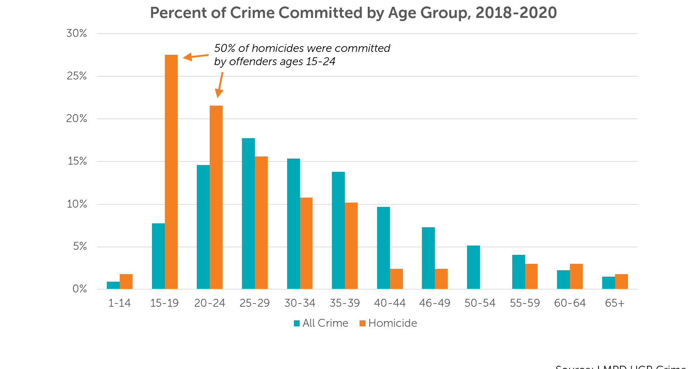
Homicide
Overall
Ranking
Louisville ranks around the middle of its peers.
this_title <- "Homicide"
this_subtitle = "Adjusted for population"
this_caption <- "\n\nData from CDC Wonder, 2022"
this_caption_trend_graphs <- "\n\nData from CDC Wonder, 2022"
temp <- mortality %>%
filter(age_5 == "total") %>%
mutate(homicide = homicide * adj)
ranking(
temp,
homicide,
year = 2021,
plot_title = "Homicide, 2021",
caption_text = this_caption,
subtitle_text = this_subtitle,
y_title = "Deaths",
label_function = comma_format(accuracy = 1),
ranking_colors = FALSE,
order = "ascending")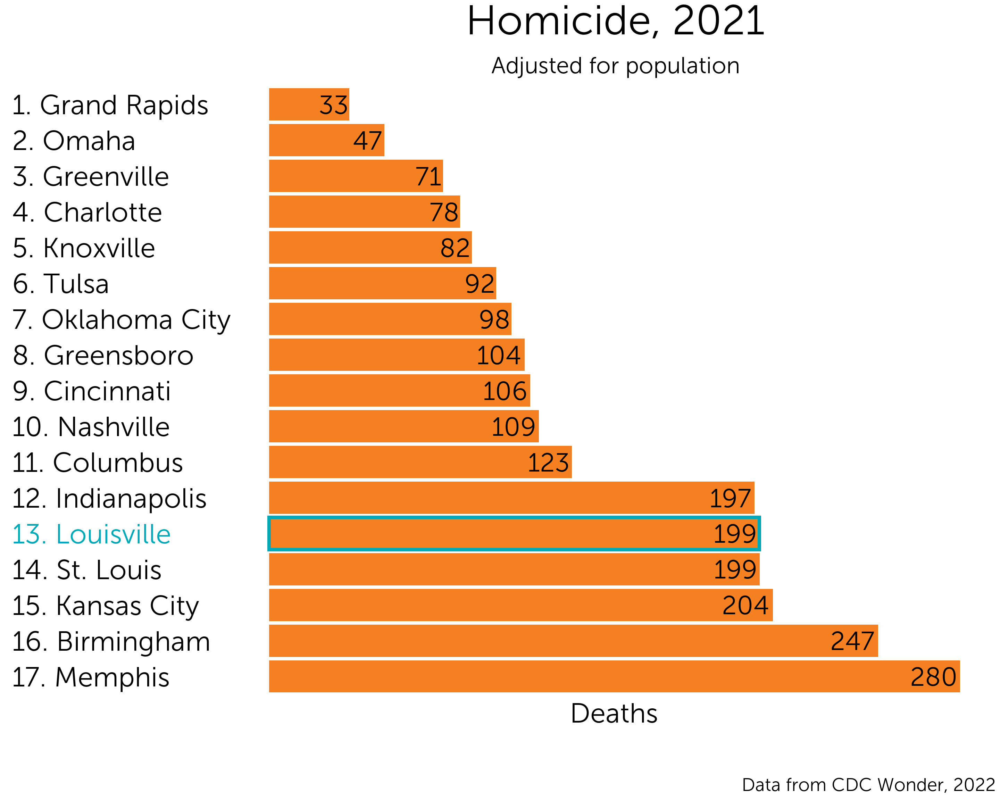
Trend
Louisville’s homicide rate in 2021 was the highest in history that we have seen as a city.
trend(
filter(temp, year < 2022),
homicide,
plot_title = this_title,
caption_text = this_caption,
axis_function = comma_format(accuracy = 1),
label_function = comma_format(accuracy = 1),
y_title = "Deaths")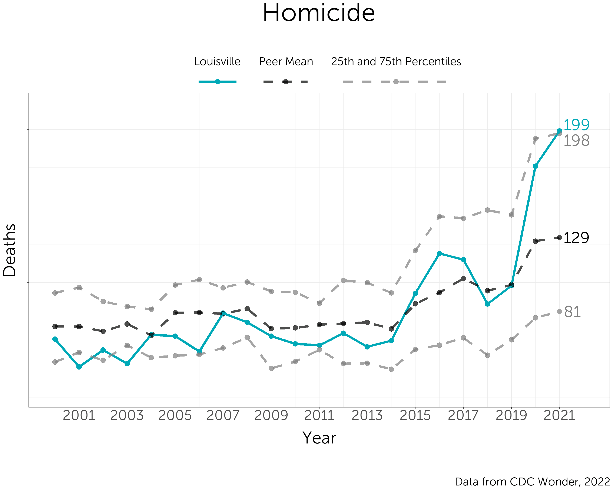
# (I don't expect to include this data, so haven't tried to shape up how it's visualized.)
#
# This graph shows the number of homicides by age group in Louisville for 2021 compared to other cities. Louisville is the blue bar, the peer mean is the black dot, and the 25th and 75th percentiles are the whiskers coming off the dot.
temp <- mortality %>%
pull_peers(add_info = T)
graph_df <- temp %>%
filter(city == "Louisville",
sex == "total",
race == "total",
age_5 != "total") %>%
select(year, age_5, lou = homicide)
temp %<>%
filter(city != "Louisville",
current == 1,
sex == "total",
race == "total",
age_5 != "total") %>%
group_by(year, age_5) %>%
summarise(q1 = quantile(homicide, prob = 0.25, na.rm = TRUE),
mean = mean(homicide, na.rm = TRUE),
q3 = quantile(homicide, prob = 0.75, na.rm = TRUE),
.groups = "drop")
graph_df %<>%
left_join(temp, by = c("year", "age_5")) %>%
filter(year == 2021)
ggplot(graph_df) +
geom_bar(aes(x = age_5, y = lou), fill = "#00A9B7", stat = "identity") +
geom_errorbar(aes(x = age_5, ymin = q1, ymax = q3), width = 0.4, size = 1.3, color = "grey50") +
geom_point(aes(x = age_5, y = mean), size = 6) +
theme_bw(
base_size = 11,
base_family = "Museo Sans")Youth homicide
Ranking
this_title <- "Youth Homicide"
this_subtitle = "Ages 15-24; adjusted for population"
temp <- mortality %>%
filter(age_5 %in% c("15-19", "20-24")) %>%
group_by(FIPS, year, sex, race) %>%
summarize(homicide = sum(homicide * adj),
.groups = "drop")
ranking(
temp,
homicide,
year = 2021,
plot_title = "Youth Homicide, 2021",
caption_text = this_caption,
subtitle_text = this_subtitle,
y_title = "Deaths",
label_function = comma_format(accuracy = 1),
ranking_colors = FALSE,
order = "ascending")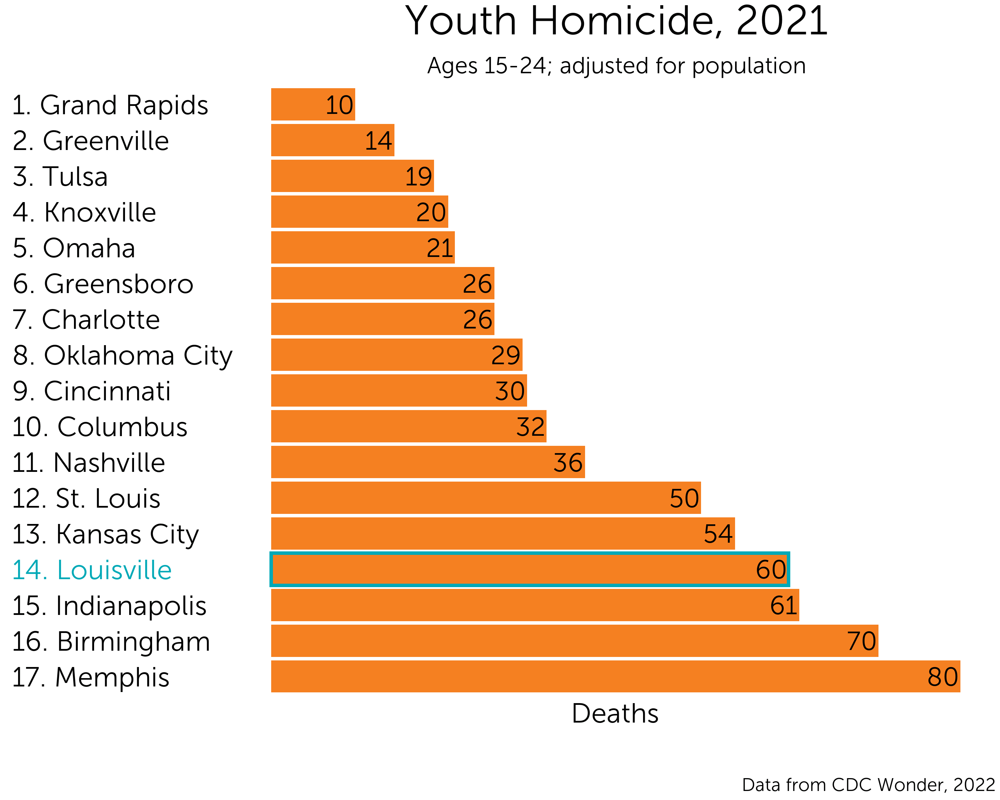
Trend
trend(
filter(mortality_wide, year < 2022, cod == "homicide"),
`15-19`:`20-24`,
cat = c("15-19" = "15-19", "20-24" = "20-24"),
plot_title = this_title,
subtitle_text = this_subtitle,
caption_text = this_caption_trend_graphs,
axis_function = comma_format(accuracy = 1),
label_function = comma_format(accuracy = 1),
pctiles = F,
y_title = "Deaths")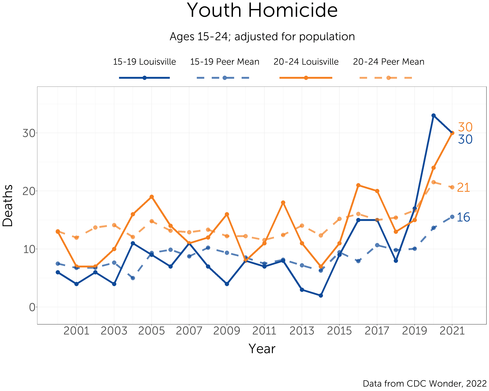
Increase
temp %>%
group_by(FIPS) %>%
filter(sex == "total", race == "total") %>%
mutate(results = homicide[year == 2021] - homicide[year == 2000]) %>%
ungroup() %>%
ranking(
results,
plot_title = "Change in Youth Gun Homicide Victims, 2000 to 2021",
subtitle_text = this_subtitle,
caption_text = this_caption,
y_title = "Change in Deaths",
title_scale = 0.8,
label_function = comma_format(accuracy = 1),
order = "ascending")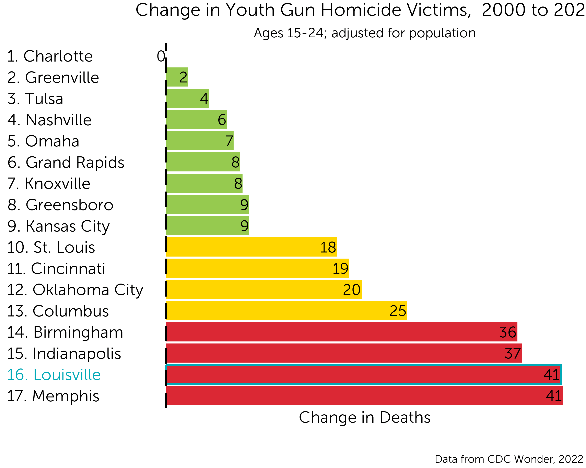
by Race
trend(
temp,
homicide,
cat = "race",
plot_title = this_title,
subtitle_text = this_subtitle,
caption_text = this_caption_trend_graphs,
axis_function = comma_format(accuracy = 1),
label_function = comma_format(accuracy = 1),
pctiles = F,
y_title = "Deaths")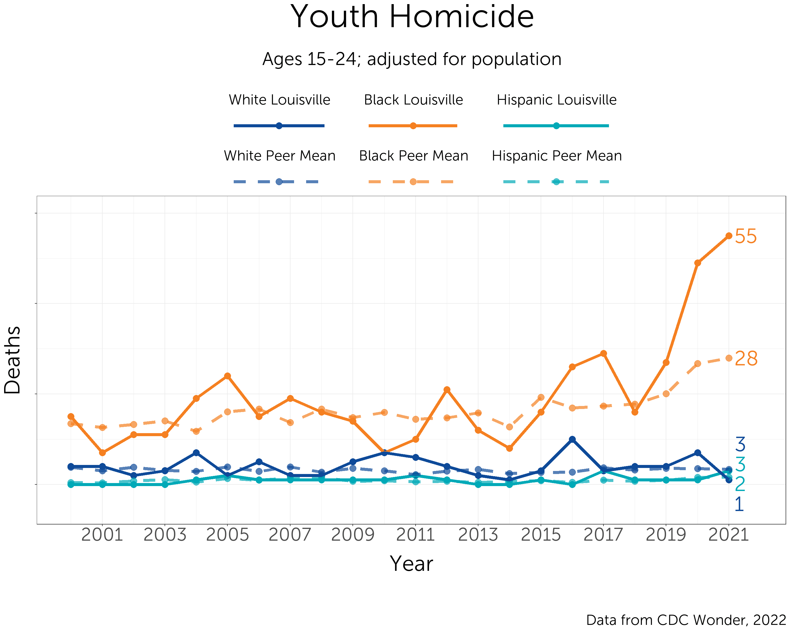
by Gender
trend(
temp,
homicide,
cat = "sex",
plot_title = this_title,
subtitle_text = this_subtitle,
caption_text = this_caption_trend_graphs,
axis_function = comma_format(accuracy = 1),
label_function = comma_format(accuracy = 1),
pctiles = F,
y_title = "Deaths")
Suicide
Overall
Ranking
Louisville ranks around the middle of its peers.
this_title <- "Suicide"
this_subtitle = "Adjusted for population"
this_caption <- "\n\nData from CDC Wonder, 2022"
this_caption_trend_graphs <- "\n\nData from CDC Wonder, 2022"
temp <- mortality %>%
filter(age_5 == "total") %>%
mutate(suicide = suicide * adj)
ranking(
temp,
suicide,
year = 2021,
plot_title = "Suicide, 2021",
caption_text = this_caption,
subtitle_text = this_subtitle,
y_title = "Deaths",
label_function = comma_format(accuracy = 1),
ranking_colors = FALSE,
order = "ascending")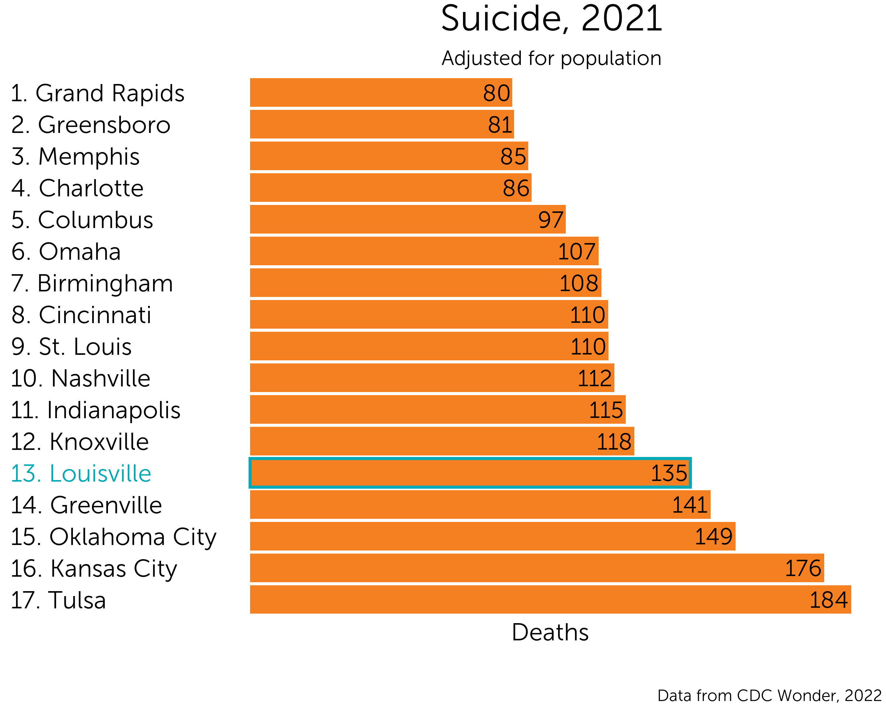
Trend
Louisville’s homicide rate in 2021 was the highest in history that we have seen as a city.
trend(
filter(temp, year < 2022),
suicide,
plot_title = this_title,
caption_text = this_caption,
label_function = comma_format(accuracy = 1),
y_title = "Deaths")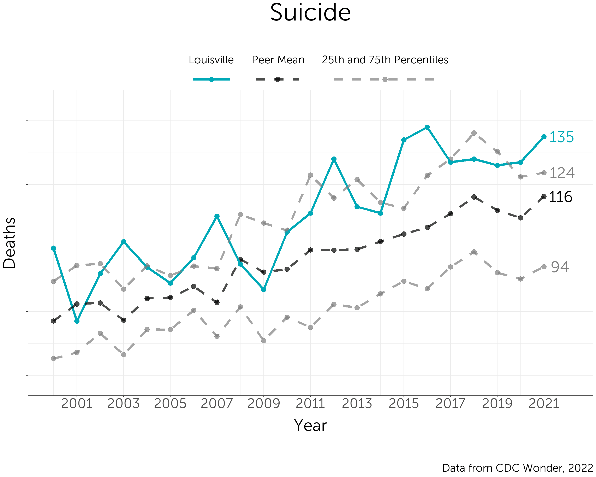
temp <- mortality %>%
pull_peers(add_info = T)
graph_df <- temp %>%
filter(city == "Louisville",
sex == "total",
race == "total",
age_5 != "total") %>%
select(year, age_5, lou = suicide)
temp %<>%
filter(city != "Louisville",
current == 1,
sex == "total",
race == "total",
age_5 != "total") %>%
group_by(year, age_5) %>%
summarise(q1 = quantile(suicide, prob = 0.25, na.rm = TRUE),
mean = mean(suicide, na.rm = TRUE),
q3 = quantile(suicide, prob = 0.75, na.rm = TRUE),
.groups = "drop")
graph_df %<>%
left_join(temp, by = c("year", "age_5")) %>%
filter(year == 2021)
ggplot(graph_df) +
geom_bar(aes(x = age_5, y = lou), fill = "#00A9B7", stat = "identity") +
geom_errorbar(aes(x = age_5, ymin = q1, ymax = q3), width = 0.4, size = 1.3, color = "grey50") +
geom_point(aes(x = age_5, y = mean), size = 6) +
theme_bw(
base_size = 11,
base_family = "Museo Sans")Youth suicide
(This doesn’t include poeple younger than 15.)
Ranking
this_title <- "Youth Suicide"
this_subtitle = "Ages 15-24; adjusted for population"
temp <- mortality %>%
filter(age_5 %in% c("15-19", "20-24")) %>%
group_by(FIPS, year, sex, race) %>%
summarize(suicide = sum(suicide * adj),
.groups = "drop")
ranking(
temp,
suicide,
year = 2021,
plot_title = "Youth Suicide, 2021",
caption_text = this_caption,
subtitle_text = this_subtitle,
y_title = "Deaths",
label_function = comma_format(accuracy = 1),
ranking_colors = FALSE,
order = "ascending")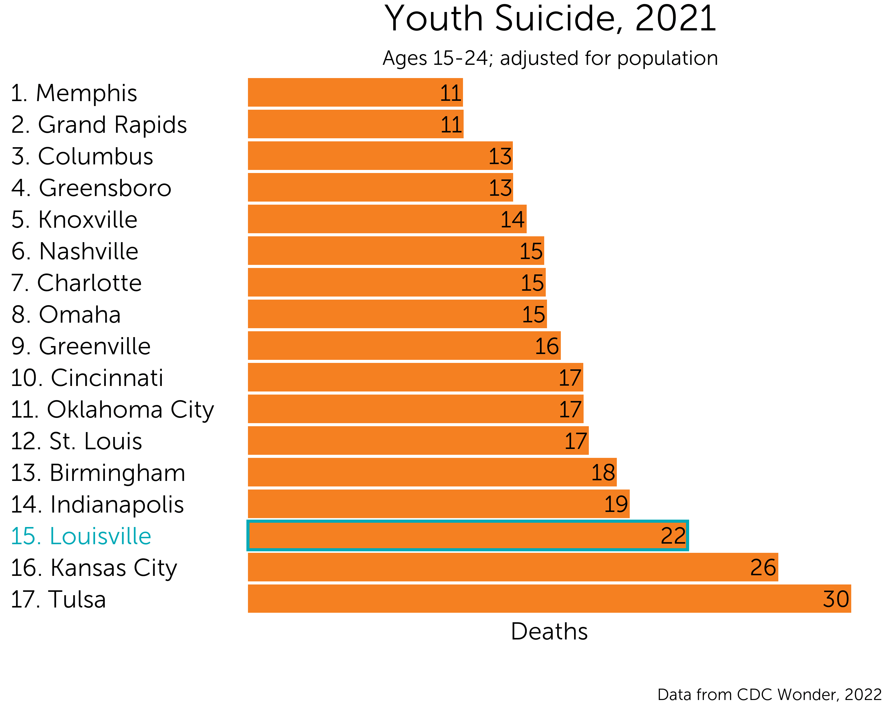
Trend
trend(
filter(mortality_wide, year < 2022, cod == "suicide"),
`15-19`:`20-24`,
cat = c("15-19" = "15-19", "20-24" = "20-24"),
plot_title = this_title,
subtitle_text = this_subtitle,
caption_text = this_caption_trend_graphs,
axis_function = comma_format(accuracy = 1),
label_function = comma_format(accuracy = 1),
pctiles = F,
y_title = "Deaths")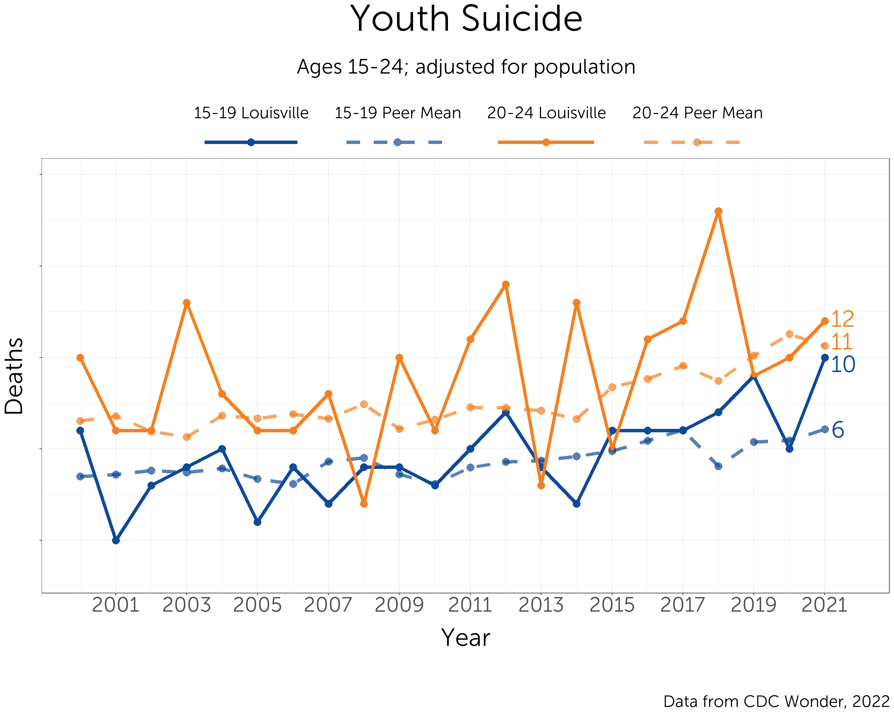
by Race
trend(
temp,
suicide,
cat = "race",
plot_title = this_title,
subtitle_text = this_subtitle,
caption_text = this_caption_trend_graphs,
axis_function = comma_format(accuracy = 1),
label_function = comma_format(accuracy = 1),
pctiles = F,
y_title = "Deaths")by Gender
trend(
temp,
suicide,
cat = "sex",
plot_title = this_title,
subtitle_text = this_subtitle,
caption_text = this_caption_trend_graphs,
axis_function = comma_format(accuracy = 1),
label_function = comma_format(accuracy = 1),
pctiles = F,
y_title = "Deaths")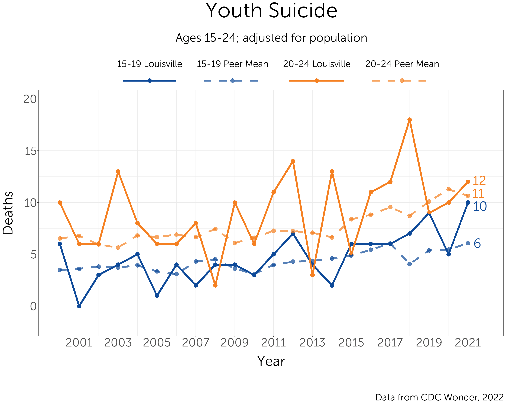
Overdoses
Overall
Ranking
Louisville ranks around the middle of its peers.
this_title <- "Overdoses"
this_subtitle = "Adjusted for population"
this_caption <- "\n\nData from CDC Wonder, 2022"
this_caption_trend_graphs <- "\n\nData from CDC Wonder, 2022"
temp <- overdose %>%
mutate(overdoses = overdoses * adj)
ranking(
temp,
overdoses,
year = 2021,
plot_title = "Overdoses, 2021",
caption_text = this_caption,
subtitle_text = this_subtitle,
y_title = "Deaths",
label_function = comma_format(accuracy = 1),
ranking_colors = FALSE,
order = "ascending")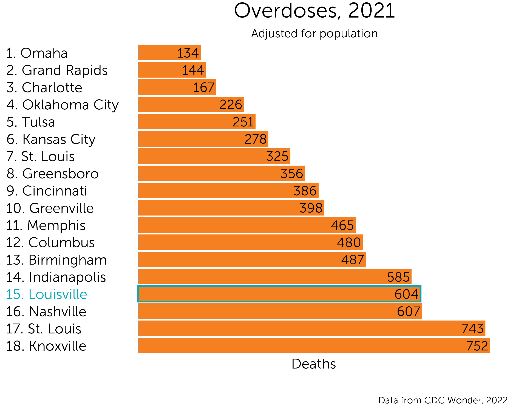
Trend
Louisville’s homicide rate in 2021 was the highest in history that we have seen as a city.
trend(
filter(temp, year < 2022),
overdoses,
plot_title = this_title,
caption_text = this_caption,
axis_function = comma_format(accuracy = 1),
label_function = comma_format(accuracy = 1),
y_title = "Deaths")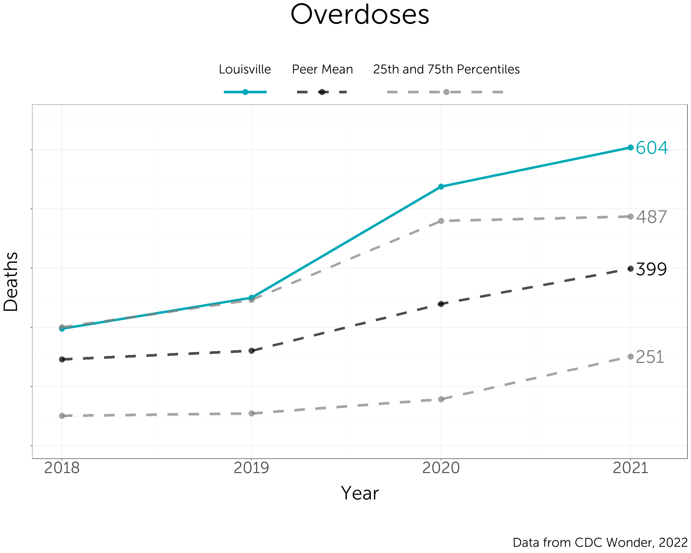
Disconnected youth
Disconnected youth are age 16 to 24 who are not working or in school.
Trend
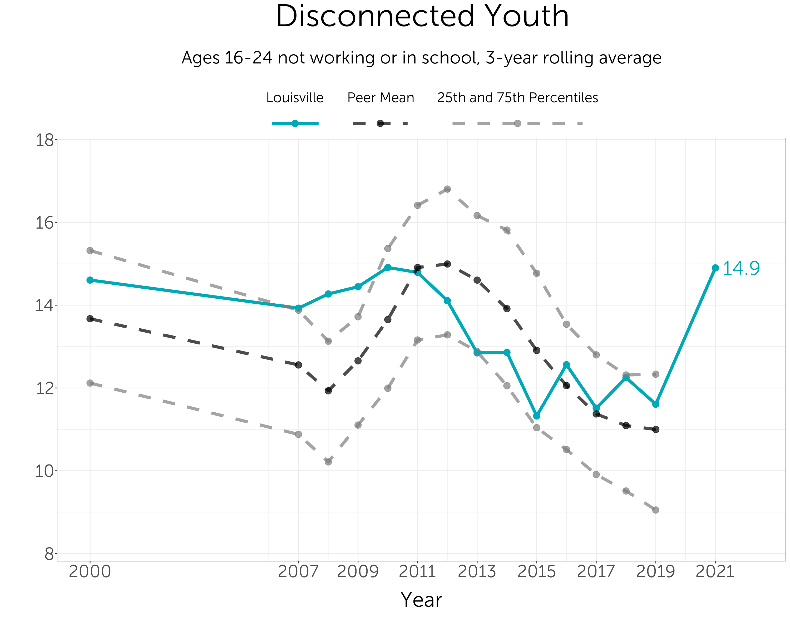
by Race
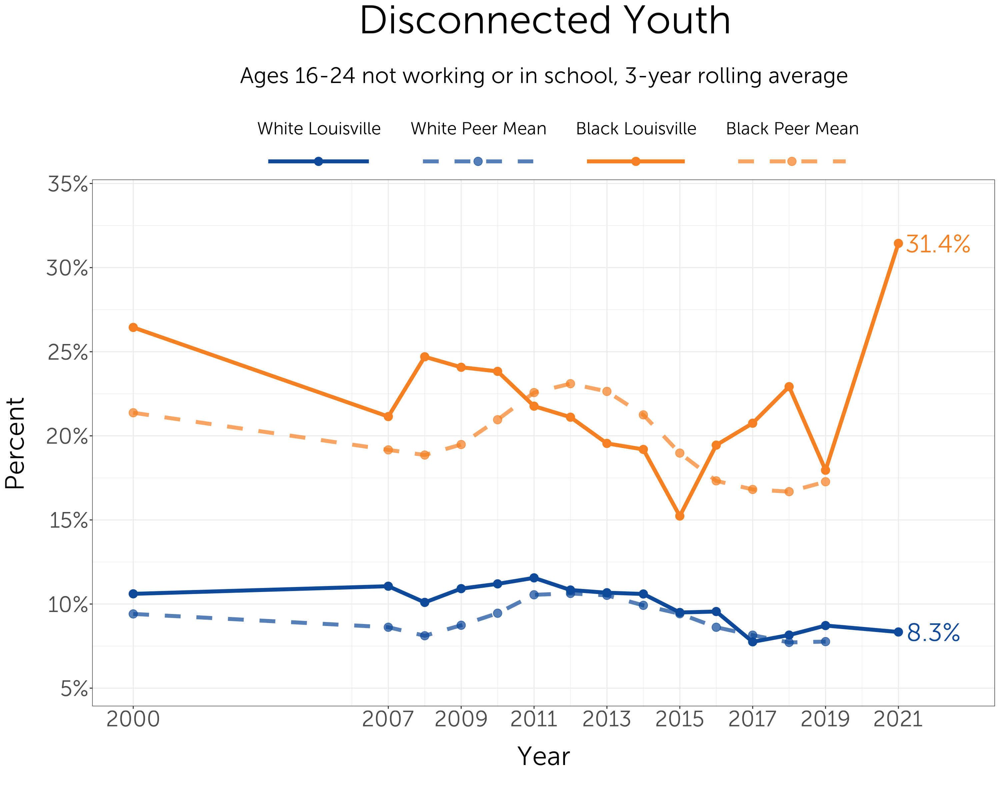
Investing in safety
OSHN staffing

City budget analysis
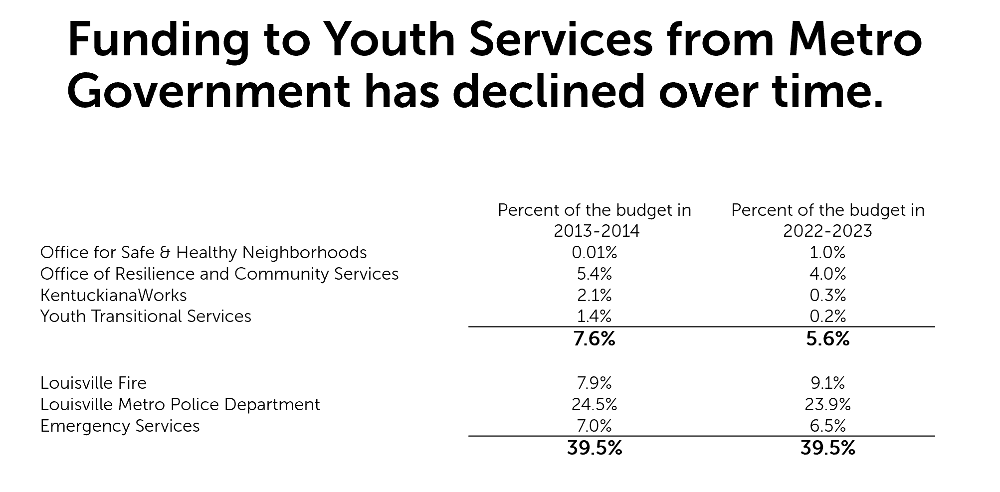
American Rescue Plan Funding

Investing in Youth
Funding to Youth Programming

Data on Youth Wellbeing
youth_data_sources <- data.frame(
Topic =
c("Mental Health in JCPS",
"Disconnected Youth",
"Youth Housing Instability",
"JCPS Transition to Adult Life",
"Funding to Youth Programming",
"Youth Violence"),
`Data Source` =
c("Kentucky Incentives for Prevention Survey",
"JCPS / Kentucky Department of Education",
"U.S. Census Bureau",
"U.S. Census Bureau",
"IRS Filings from Nonprofits",
"Centers for Disease Control"),
`Current Year of Data` =
c(2018,
2019,
2019,
2019,
2020,
2021),
`Next Data Release` = c(
"Unsure",
"September 2022",
"December 2022",
"December 2022",
"December 2022",
"March 2022"),
Explanation = c(
"The Kentucky Incentives for Prevention Survey is Kentucky’s largest source of data related to youth use of alcohol, tobacco, and other drugs (ATOD), as well as a number of additional factors related to adolescent social and emotional well-being. This survey was last conducted in 2021 following the COVID-19 pandemic; however, participation is voluntary. JCPS declined to conduct the survey in 2021, and as a result, 2018 is the last year for which we have this data.", "JCPS provides data on students' plans following graduation--entry into the workforce or military, college attendance, etc. While we have 2020 data, it is not comparable to other years due to diruptions from the COVID-19 pandemic. We await the next data release in September 2022.",
"The U.S. Census Bureau administers an annual household survey (the American Community Survey, or ACS) which provides a variety of data on demographics, housing, and economics. Disruptions due to COVID-19 rendered the 2020 data inaccurate, so we await the 2021 data release coming in December 2022.",
"The U.S. Census Bureau administers an annual household survey (the American Community Survey, or ACS) which provides a variety of data on demographics, housing, and economics. Disruptions due to COVID-19 rendered the 2020 data inaccurate, so we await the 2021 data release coming in December 2022.",
"Tax filings for nonprofit organizations are public information, which allows us to understand the landscape of investment in youth programs in Louisville. The IRS has released all on-time filings for tax year 2020, and we will get newwer data on a rolling basis as tax returns for 2021 are submitted and released.",
"The CDC releases mortality data on a monthly basis. This gives us insight into gun violence and other deaths for youth and young adults in Louisville."))
gt(youth_data_sources)| Topic | Data.Source | Current.Year.of.Data | Next.Data.Release | Explanation |
|---|---|---|---|---|
| Mental Health in JCPS | Kentucky Incentives for Prevention Survey | 2018 | Unsure | The Kentucky Incentives for Prevention Survey is Kentucky’s largest source of data related to youth use of alcohol, tobacco, and other drugs (ATOD), as well as a number of additional factors related to adolescent social and emotional well-being. This survey was last conducted in 2021 following the COVID-19 pandemic; however, participation is voluntary. JCPS declined to conduct the survey in 2021, and as a result, 2018 is the last year for which we have this data. |
| Disconnected Youth | JCPS / Kentucky Department of Education | 2019 | September 2022 | JCPS provides data on students' plans following graduation--entry into the workforce or military, college attendance, etc. While we have 2020 data, it is not comparable to other years due to diruptions from the COVID-19 pandemic. We await the next data release in September 2022. |
| Youth Housing Instability | U.S. Census Bureau | 2019 | December 2022 | The U.S. Census Bureau administers an annual household survey (the American Community Survey, or ACS) which provides a variety of data on demographics, housing, and economics. Disruptions due to COVID-19 rendered the 2020 data inaccurate, so we await the 2021 data release coming in December 2022. |
| JCPS Transition to Adult Life | U.S. Census Bureau | 2019 | December 2022 | The U.S. Census Bureau administers an annual household survey (the American Community Survey, or ACS) which provides a variety of data on demographics, housing, and economics. Disruptions due to COVID-19 rendered the 2020 data inaccurate, so we await the 2021 data release coming in December 2022. |
| Funding to Youth Programming | IRS Filings from Nonprofits | 2020 | December 2022 | Tax filings for nonprofit organizations are public information, which allows us to understand the landscape of investment in youth programs in Louisville. The IRS has released all on-time filings for tax year 2020, and we will get newwer data on a rolling basis as tax returns for 2021 are submitted and released. |
| Youth Violence | Centers for Disease Control | 2021 | March 2022 | The CDC releases mortality data on a monthly basis. This gives us insight into gun violence and other deaths for youth and young adults in Louisville. |
Policing
Clearance Rates
The clearance rate is the percent of cases that are solved. Louisville’s clearance rate has been low compared to its peers over the past few years. A sharp rise in homicides since 2019 has contributed to the number of unsolved cases in our community.
setwd("..")
folders <- list.files("NIBRS", include.dirs = TRUE)
agencies <- data.frame()
incidents <- data.frame()
offenses <- data.frame()
arrestees <- data.frame()
clearances <- data.frame()
for (i in 1:length(folders)) {
f <- folders[i]
this_agency <- read_csv("NIBRS/" %p% f %p% "/agencies.csv")
this_incident <- read_csv("NIBRS/" %p% f %p% "/NIBRS_incident.csv", col_types = "nnnnldlnndclln")
this_offense <- read_csv("NIBRS/" %p% f %p% "/NIBRS_OFFENSE.csv")
this_arrestee <- read_csv("NIBRS/" %p% f %p% "/NIBRS_ARRESTEE.csv", col_types = "nnnndnccnncnncclcc")
this_clearance <- read_csv("NIBRS/" %p% f %p% "/NIBRS_CLEARED_EXCEPT.csv", col_types = "nccc")
agencies <- bind_rows(agencies, this_agency)
incidents <- bind_rows(incidents, this_incident)
offenses <- bind_rows(offenses, this_offense)
arrestees <- bind_rows(arrestees, this_arrestee)
clearances <- bind_rows(clearances, this_clearance)
}FIPS_join <- FIPS_info %>%
mutate(county = str_to_upper(county))
FIPS_join$county[FIPS_join$county == "ST. LOUIS"] <- "ST LOUIS"
agencies %<>%
transmute(
agency_id,
agency_name = str_to_title(ncic_agency_name),
county = county_name,
state_abbr = state_postal_abbr,
population) %>%
separate(county, ", ", into = c("county1", "county2", "county3", "county4")) %>%
pivot_longer(county1:county4, names_to = "county_col", values_to = "county") %>%
filter(!is.na(county)) %>%
select(-county_col) %>%
left_join(FIPS_join, by = c("county", "state_abbr")) %>%
filter(!is.na(FIPS))
peer_agencies <- agencies %>%
select(agency_id, FIPS)
peer_incidents <- incidents %>%
left_join(peer_agencies, by = "agency_id") %>%
filter(!is.na(FIPS))
peer_offenses <- offenses %>%
filter(offense_code %in% c("09A", "09B", "09C"))
peer_homicides <- peer_
table(peer_incidents$FIPS)
incident_simple
Louisville’s Recent History of Alternative Responder Models
Many communities have relied on police officers as somewhat of a catch-all response to all kinds of crises. However, some say that many of these crises do not merit a police response; instead, they would be better solved by mental health experts and other providers of social services.
Communities big and small — Phoenix, Portland, Tucson and Wichita, to name a few — have experimented in recent years with so-called alternative responder models in which police officers are not the default first response to a crisis.
Over the last decade, Louisville has experimented with a few of these alternative responder models, aiming to reroute crisis calls from the police to mental health experts, social service providers and other experts who might be able to respond more appropriately.
All of these pilot programs enjoyed some success but none are around to today largely because of a lack of funding.

Note: This historical account is adapted from the Louisville Metro Alternative Responder Model Research and Planning Final Report from the Commonwealth Institute of Kentucky (September 2021)
Outcomes:
- Nurse Triage Program: The program was largely successful, and it expanded from one nurse to two. However, the program ran out of grant funding.
- Domestic Violence Victim Advocates: The victim advocates involved in the program reported that the program had positive effects on those experiencing trauma but also noted that the need in the community exceeded the capacity of their small team.
- Law Enforcement Assisted Diversion: The program served fewer people than expected over its relatively short lifespan. Other challenges included staff turnover in partner agencies and limited buy-in from partner agencies.
- The Living Room: The program was largely successful in that it provided wide access to behavioral health services while avoiding jail time, court fees, inpatient stays and housing and employment disruptions. It also resulted in cost savings to the Metro Government. However, budget cuts ultimately shuttered the program.
Existing LMPD Mental Health Initiatives
The Crisis Intervention Team (CIT) model is a popular training program that teaches officers how to interact with and respond to those experiencing mental health crises.
LMPD officers receive 40 hours of CIT training, and there are CIT-trained individuals available on every shift in every police division. However, according to researchers at the University of Louisville’s Commonwealth Institute of Kentucky, “LMPD does not routinely evaluate its CIT program and impact, outcomes, and efficiency.”
In addition to the 40 hours of CIT training for some current LMPD officers, LMPD recruits going through the police academy complete 38.5 hours of CIT training.
Apart from CIT training, in February 2021, LMPD created its Mobile Response Unit with two homelessness officers. The unit has performed wellness checks and partnered with various community organizations to document homelessness and provide various resources.
LMPD’s Investment in Social Services
The total number of LMPD officers has risen and fallen over the last 15 years. It hit its peak in fiscal year 2018, at 1,027 officers. As of fiscal year 2020, there are now 956 officers.
Meanwhile, for most of the last 15 years, LMPD has employed one or even no employees focused on social services, according to a GLP analysis of Louisville Metro Government documents. GLP included the positions of victim advocate, social service program coordinator and similar iterations of these positions in its analysis.
In the most recent fiscal year in which data is available (2020), LMPD employed four individuals with a focus on providing social services to the community.
officer_data <- read.csv('intermediate_data/lmpd_victim_advocates.csv')
library(ggplot2)
total_officers <- ggplot(officer_data, aes(x=fiscal_year, y=police_officer)) +
geom_line() +
theme_minimal()
total_social_services <- ggplot(officer_data, aes(x=fiscal_year, y=social_services)) +
geom_line() +
theme_minimal()
Mental Health Calls to LMPD that Could be Deflected
In 2021, LMPD responded to 192,445 calls. Of those calls, 7,996 calls were mental health related (about 4%). An analysis by researchers at the Commonwealth Institute of Kentucky found that trained professionals other than police officers could have responded to 5,661 of those 7,996 mental health calls (71%). This is known as deflection.
Communities across the country have called for more police deflection, in favor of crisis response by mental health professionals and other social service providers.
In March, Louisville officially launched a $5 million pilot program to deflect some 911 calls to other behavioral health professionals.
Louisville’s new police deflection pilot program 11 trained professionals. Seven of those professionalls will be in the field responding to calls. Two will be answering 911 calls at a hub at MetroSafe, and two are case managers who will provide follow up services after 911 calls.
The pilot program began in LMPD’s 4th Division with one shift, 7 days per week. The 4th Division received the most mental health calls in 2021, followed by the 1st Division.
#install.packages('geojsonio')
library(geojsonio)
library(ggplot2)
library(broom)
districts <- geojson_read("intermediate_data/Louisville_KY_Metro_Police_Districts.geojson", what = "sp")
districts_fortified <- tidy(districts)
district_map <- ggplot() +
geom_polygon(data = districts_fortified, aes(x = long, y = lat, group = group), fill="white", color="black") +
theme_void() +
coord_map()
Archive
This is content that we are planning to cut!
Adverse Childhood Experiences
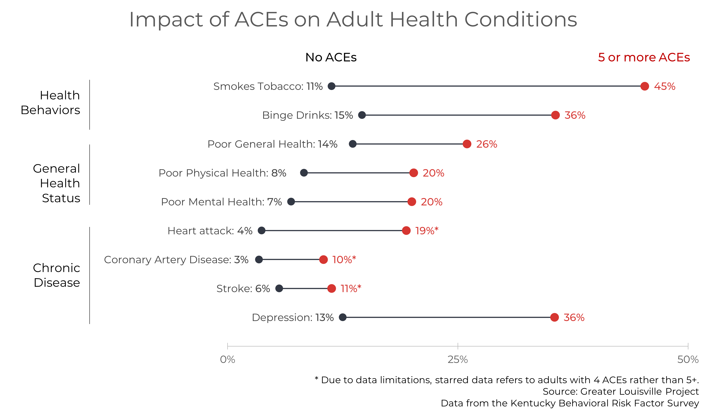
LMPD
A Broader Look at Police Spending:
Zooming out briefly, here’s a look at the most recent LMPD budget and specifically how much the department spends on its officers and other personnel vs. other expenses, compared to its peers.
For this analysis, GLP focused on the peer cities of Nashville, Indianapolis and St. Louis. These are all cities in which the combined city and county public safety spending could be determined relatively easily and, therefore, compared with the Louisville metro area.
Louisville and Nashville spend about the same on their police departments. However, Nashville spends more of its budget on its police officers and other personnel (98%) than Louisville (94%). Louisville spends relatively more on its contracts with out other vendors.
Additionally, even though Louisville and Nashville have lower overall police budgets than Indianapolis and St. Louis, they both set aside a greater chunk of their budget for their officers and other personnel than Indianapolis and St. Louis.
library(ggplot2)
library(waffle)
louisville_police_spending <- c(`Personnel ($176.5M)`=176514100, `Contracts ($8.4M)`=8449200,
`Supplies ($2.2M)`=2244600, `Equipment and Capital ($878.6K)`=878600, `Utilities ($30.6K)`=30600)
louisville_waffle <- waffle(louisville_police_spending/500000, rows=10, size=0.5,
colors=c("#01acbb", "#f48422", "#520b34", "#1b3663", "#45644c"),
xlab="1 square == $500K")
nashville_police_spending <- c(`Personnel ($184.3M)`=184308627, `Contracts ($731K)`=731118,
`Equipment and Capital ($2.6M)`=2617006, `Utilities ($56.4K)`=56414)
nashville_waffle <- waffle(nashville_police_spending/500000, rows=10, size=0.5,
colors=c("#01acbb", "#f48422", "#520b34", "#1b3663"),
xlab="1 square == $500K")
st_louis_police_spending <- c(`Personnel ($237.7M)`=237696985, `Contracts ($18M)`=17950338,
`Equipment and Capital ($2.8M)`=2765396, `Supplies ($4.6M)`=4623194)
stlouis_waffle <- waffle(st_louis_police_spending/500000, size=0.5,
colors=c("#01acbb", "#f48422", "#520b34", "#1b3663"),
xlab="1 square == $500K")
indianapolis_police_spending <- c(`Personnel ($200M)`=199974660, `Contracts ($20M)`=20013384,
`Equipment and Capital ($9.4M)`=9432587, `Supplies ($2M)`=2002650)
indianapolis_waffle <- waffle(indianapolis_police_spending/500000,size=0.5,
colors=c("#01acbb", "#f48422", "#520b34", "#1b3663"),
xlab="1 square == $500K") LMPD’s police budget
has continually increased over time — especially recently with tens of
millions of dollars flowing in from the American Rescue Plan.
LMPD’s police budget
has continually increased over time — especially recently with tens of
millions of dollars flowing in from the American Rescue Plan.
Police salaries have also increased over time. In December 2021, Metro Council members approved a 9% raise for officers and sergeants for the 2021-22 year and a 6% raise for the following year.
Currently, LMPD officers make nearly $57,000 after graduating from the police academy. That’s $24,000 above the $32,705 pre-tax living wage for one adult with no children in Louisville, according to MIT.
A few of Louisville’s peer cities pay their officers even more above the area living wage: Cincinnati, Columbus, Indianapolis and Tulsa.
#devtools::install_github("hrbrmstr/ggalt")
library(ggplot2)
library(ggalt)
theme_set(theme_classic())
officer_salaries <- read.csv('intermediate_data/police_officer_salary_peers.csv')
officer_salaries$city <- factor(officer_salaries$city, levels=as.character(officer_salaries$city))
officer_salaries$city <- factor(officer_salaries$city)
dumbbell <- ggplot(officer_salaries, aes(x=living_wage, xend=after_graduation, y=city, group=city)) +
geom_dumbbell(color="#01acbb",
size=1.5,
point.colour.l="#1b3663") +
scale_x_continuous() +
labs(x=NULL,
y=NULL) +
theme(plot.title = element_text(hjust=0.5, face="bold"),
panel.grid.minor=element_blank(),
panel.grid.major.y=element_blank(),
panel.grid.major.x=element_line(),
axis.ticks=element_blank(),
legend.position="top",
panel.border=element_blank())
LMPD Professional Standards Unit Investigations
Those who advocate for police officers to respond to fewer types of calls in the community sometimes point to police misconduct data.
Here’s a closer look at Professional Standards Unit investigations over the past couple of years. The PSU is responsible for conducting “internal, administrative investigations of departmental members and administering the department’s drug testing program,” according to LMPD documents.
In 2020, the most common allegation or charge against LMPD officers involved use of force, followed by concerns with courtesy and officers’ wearable video systems.
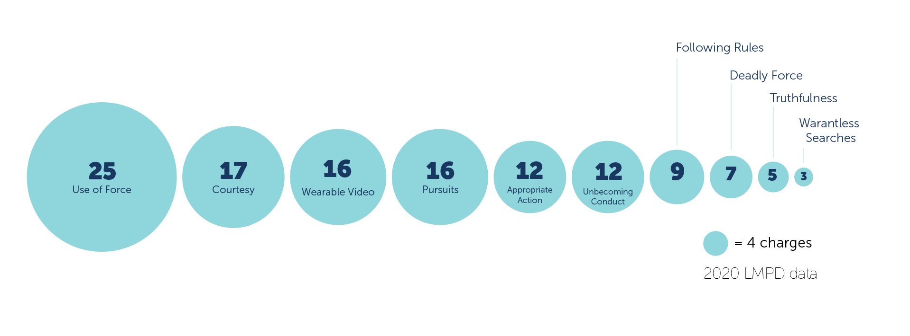
Over the last few years, the number of PSU investigations has declined.
More than 40% of the investigations launched in 2020 are still pending, even two years later, and more than 70% of the investigations launched in 2021 are still pending. Overall, in any given year, a greater proportion of investigations are closed through various means (i.e. the charges are unfounded, the officer is exonerated, etc.) than sustained.
Generally, over the past few years, most investigations have resulted in a written reprimand or suspension. Relatively few have resulted in termination or demotion.
library(ggplot2)
psu_outcomes <- read.csv('intermediate_data/PSU_investigations.csv')
psu_outcomes <- ggplot(psu_outcomes, aes(x=year)) +
geom_line(aes(y = pending), color = "#01acbb") +
geom_line(aes(y = sustained), color = "#1b3663") +
geom_line(aes(y = closed), color = "#1b3663") +
geom_line(aes(y = total), color = "#1b3663") +
theme_minimal()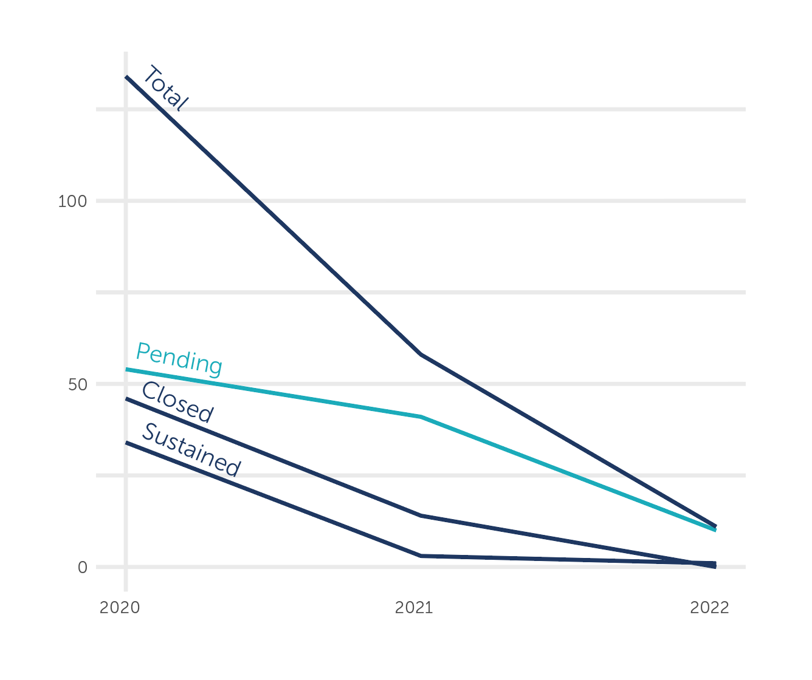